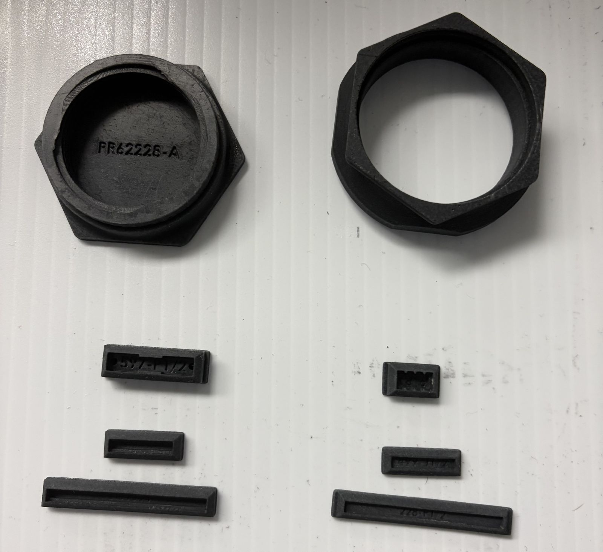

Portfolio

Creation Technologies, Albuquerque, NM
So far in my career, I have had the opportunity to be an engineering intern at Creation Technologies. I started designing trays to hold parts in SolidWorks and assisted the engineers with machine maintenance, documentation, and planning for future projects.
In my second summer, I managed a small team developing and implementing a new process for resin-printed connector boots. This included product design, testing and iteration, developing a post-processing procedure, process documentation, and training existing employees on the procedure and safety requirements.
A cost-savings analysis showed a 222-hour reduction in labor and $225,000 in total savings.
Skills
I have design experience in SolidWorks and earned my CSWA certification, using it to build automotive and CNC models and 3D-printable files. I have some exposure to C++ and Java, and more experience with MATLAB, HTML, and CSS.
In manufacturing, I am familiar with the manual mill and lathe and their CNC counterparts through my Haas CNC mill certificate, and I have used both low-power and CO2 lasers for engraving and cutting.
Outside of class, I restore 1970s Volkswagen Beetles, building custom parts, welding, and working on the combustion engines, drivetrains, and electronics.